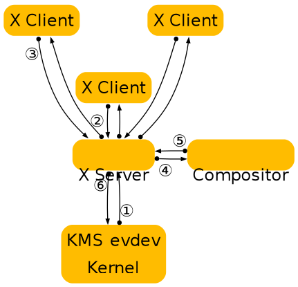
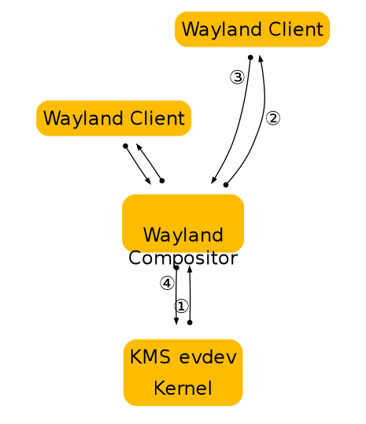

Wayland Architecture
X vs. Wayland Architecture
A good way to understand the Wayland architecture and how it is different from X is to follow an event from the input device to the point where the change it affects appears on screen.
This is where we are now with X:
X architecture diagram

-
The kernel gets an event from an input device and sends it to X through the evdev input driver. The kernel does all the hard work here by driving the device and translating the different device specific event protocols to the linux evdev input event standard.
-
The X server determines which window the event affects and sends it to the clients that have selected for the event in question on that window. The X server doesn’t actually know how to do this right, since the window location on screen is controlled by the compositor and may be transformed in a number of ways that the X server doesn’t understand (scaled down, rotated, wobbling, etc).
-
The client looks at the event and decides what to do. Often the UI will have to change in response to the event - perhaps a check box was clicked or the pointer entered a button that must be highlighted. Thus the client sends a rendering request back to the X server.
-
When the X server receives the rendering request, it sends it to the driver to let it program the hardware to do the rendering. The X server also calculates the bounding region of the rendering, and sends that to the compositor as a damage event.
-
The damage event tells the compositor that something changed in the window and that it has to recomposite the part of the screen where that window is visible. The compositor is responsible for rendering the entire screen contents based on its scenegraph and the contents of the X windows. Yet, it has to go through the X server to render this.
-
The X server receives the rendering requests from the compositor and either copies the compositor back buffer to the front buffer or does a pageflip. In the general case, the X server has to do this step so it can account for overlapping windows, which may require clipping and determine whether or not it can page flip. However, for a compositor, which is always fullscreen, this is another unnecessary context switch.
As suggested above, there are a few problems with this approach. The X server doesn’t have the information to decide which window should receive the event, nor can it transform the screen coordinates to window-local coordinates. And even though X has handed responsibility for the final painting of the screen to the compositing manager, X still controls the front buffer and modesetting. Most of the complexity that the X server used to handle is now available in the kernel or self contained libraries (KMS, evdev, mesa, fontconfig, freetype, cairo, Qt etc). In general, the X server is now just a middle man that introduces an extra step between applications and the compositor and an extra step between the compositor and the hardware.
In Wayland the compositor is the display server. We transfer the control of KMS and evdev to the compositor. The Wayland protocol lets the compositor send the input events directly to the clients and lets the client send the damage event directly to the compositor:
Wayland architecture diagram

-
The kernel gets an event and sends it to the compositor. This is similar to the X case, which is great, since we get to reuse all the input drivers in the kernel.
-
The compositor looks through its scenegraph to determine which window should receive the event. The scenegraph corresponds to what’s on screen and the compositor understands the transformations that it may have applied to the elements in the scenegraph. Thus, the compositor can pick the right window and transform the screen coordinates to window-local coordinates, by applying the inverse transformations. The types of transformation that can be applied to a window is only restricted to what the compositor can do, as long as it can compute the inverse transformation for the input events.
-
As in the X case, when the client receives the event, it updates the UI in response. But in the Wayland case, the rendering happens in the client, and the client just sends a request to the compositor to indicate the region that was updated.
-
The compositor collects damage requests from its clients and then recomposites the screen. The compositor can then directly issue an ioctl to schedule a pageflip with KMS.
Wayland Rendering
One of the details I left out in the above overview is how clients actually render under Wayland. By removing the X server from the picture we also removed the mechanism by which X clients typically render. But there’s another mechanism that we’re already using with DRI2 under X: direct rendering. With direct rendering, the client and the server share a video memory buffer. The client links to a rendering library such as OpenGL that knows how to program the hardware and renders directly into the buffer. The compositor in turn can take the buffer and use it as a texture when it composites the desktop. After the initial setup, the client only needs to tell the compositor which buffer to use and when and where it has rendered new content into it.
This leaves an application with two ways to update its window contents:
-
Render the new content into a new buffer and tell the compositor to use that instead of the old buffer. The application can allocate a new buffer every time it needs to update the window contents or it can keep two (or more) buffers around and cycle between them. The buffer management is entirely under application control.
-
Render the new content into the buffer that it previously told the compositor to to use. While it’s possible to just render directly into the buffer shared with the compositor, this might race with the compositor. What can happen is that repainting the window contents could be interrupted by the compositor repainting the desktop. If the application gets interrupted just after clearing the window but before rendering the contents, the compositor will texture from a blank buffer. The result is that the application window will flicker between a blank window or half-rendered content. The traditional way to avoid this is to render the new content into a back buffer and then copy from there into the compositor surface. The back buffer can be allocated on the fly and just big enough to hold the new content, or the application can keep a buffer around. Again, this is under application control.
In either case, the application must tell the compositor which area of the surface holds new contents. When the application renders directly to the shared buffer, the compositor needs to be noticed that there is new content. But also when exchanging buffers, the compositor doesn’t assume anything changed, and needs a request from the application before it will repaint the desktop. The idea that even if an application passes a new buffer to the compositor, only a small part of the buffer may be different, like a blinking cursor or a spinner.
Accelerated GPU Buffer Exchange
Clients exchange GPU buffers with the compositor as dma-buf file descriptors, which are universal handles that are independent of any particular rendering API or memory allocator. The linux-dmabuf-v1 protocol is used to turn one or more dma-buf FDs into a wl_buffer.
If the client uses the Vulkan or EGL (via wayland-egl) window-system integration (WSI), this is done transparently by the WSI.
Clients can alternatively allocate and import dma-bufs themselves using the GBM library, Vulkan, udmabuf, or dma-buf heaps.
-
Using GBM, the client can allocate a gbm_bo and export one or more dma-buf FDs from it.
-
Using Vulkan, the client can create a VkDeviceMemory object and use VK_EXT_external_memory_dma_buf and VK_EXT_image_drm_format_modifier to export a dma-buf FD from it.
-
udmabuf can be used to create dma-buf FDs from linear host memory.
-
Dma-buf heaps can be used by privileged applications to create dma-buf FDs on embedded devices.
Compositors use VK_EXT_external_memory_dma_buf and VK_EXT_image_drm_format_modifier or EGL_EXT_image_dma_buf_import and EGL_EXT_image_dma_buf_import_modifiers to import the dma-bufs provided by the client into their own Vulkan or EGL renderers.
Clients do not need to wait for the GPU to finish rendering before submitting dma-bufs to the compositor. Clients can use the linux-drm-syncobj-v1 protocol to exchange DRM synchronization objects with the compositor. These objects are used to asynchronously signal ownership transfer of buffers from clients to the compositor and vice versa. The WSIs do this transparently.
If the linux-drm-syncobj-v1 protocol is not supported by the compositor, clients and compositors can use the DMA_BUF_IOCTL_EXPORT_SYNC_FILE and DMA_BUF_IOCTL_IMPORT_SYNC_FILE ioctls to access and create implicit synchronization barriers.
Display Programming
Compositors enumerate DRM KMS devices using udev. Udev also notifies compositors of KMS device and display hotplug events.
Access to DRM KMS device ioctls is privileged. Since compositors usually run as unprivileged applications, they typically gain access to a privileged file descriptor using the TakeDevice method provided by logind.
Using the file descriptor, compositors use KMS ioctls to enumerate the available displays.
Compositors use atomic mode setting to change the buffer shown by the display, to change the display’s resolution, to enable or disable HDR, and so on.